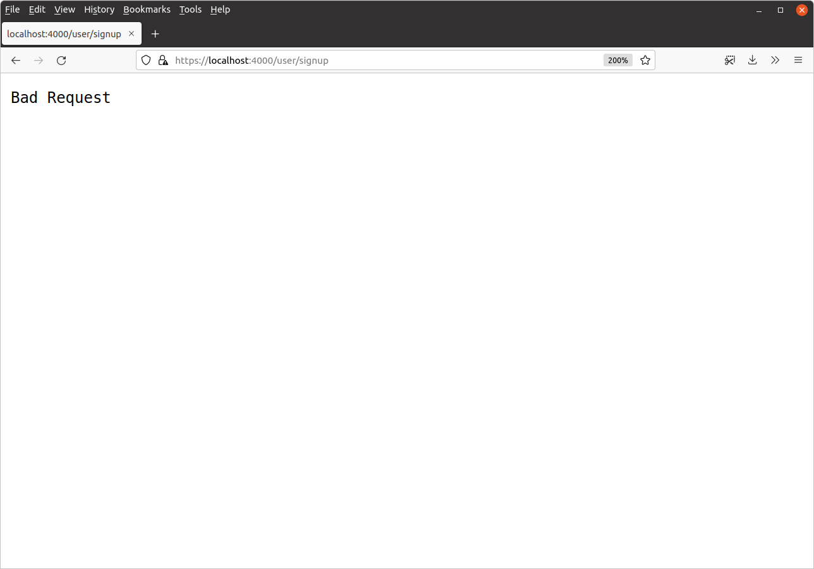
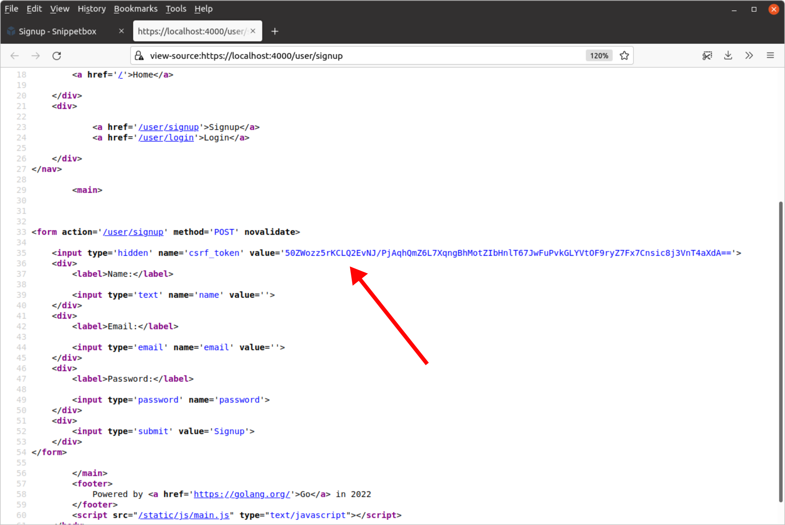

محافظت در برابر CSRF
در این فصل به نحوه محافظت از برنامه خود در برابر حملات جعل درخواست بین سایتی (CSRF) میپردازیم.
اگر با اصول CSRF آشنا نیستید، این نوعی حمله است که در آن یک وبسایت مخرب شخص ثالث درخواستهای HTTP تغییردهنده وضعیت را به وبسایت شما ارسال میکند. توضیح خوبی از حمله CSRF پایه را میتوانید اینجا پیدا کنید.
در برنامه ما، خطر اصلی این است:
یک کاربر به برنامه ما وارد میشود. کوکی نشست ما برای ۱۲ ساعت تنظیم شده است، بنابراین حتی اگر از برنامه خارج شوند، همچنان وارد باقی میمانند.
کاربر سپس به وبسایت دیگری میرود که حاوی کد مخربی است که یک درخواست بین سایتی به endpoint
POST /snippet/createما برای افزودن snippet جدید به پایگاه داده ما ارسال میکند. کوکی نشست کاربر برای برنامه ما همراه با این درخواست ارسال خواهد شد.چون درخواست شامل کوکی نشست است، برنامه ما درخواست را به عنوان درخواست از یک کاربر وارد شده تفسیر میکند و آن را با امتیازات آن کاربر پردازش خواهد کرد. بنابراین بدون اطلاع کاربر، یک snippet جدید به پایگاه داده ما اضافه خواهد شد.
علاوه بر حملات CSRF ‘سنتی’ مانند بالا (که در آن یک درخواست با امتیازات یک کاربر وارد شده پردازش میشود)، برنامه شما همچنین ممکن است در معرض خطر حملات CSRF ورود و خروج باشد.
کوکیهای SameSite
یکی از راههای کاهش خطر که میتوانیم برای جلوگیری از حملات CSRF انجام دهیم این است که مطمئن شویم ویژگی SameSite به درستی روی کوکی نشست ما تنظیم شده است.
به طور پیشفرض بسته alexedwards/scs که استفاده میکنیم همیشه SameSite=Lax را روی کوکی نشست تنظیم میکند. این به این معنی است که کوکی نشست ارسال نخواهد شد توسط مرورگر کاربر برای هر درخواست بین سایتی با متدهای HTTP POST، PUT یا DELETE.
تا زمانی که برنامه ما از متد POST برای هر درخواست HTTP تغییردهنده وضعیت استفاده میکند (مانند آنچه برای ارسال فرمهای ورود، ثبتنام، خروج و ایجاد snippet انجام میدهیم)، این به این معنی است که کوکی نشست برای این درخواستها ارسال نخواهد شد اگر از وبسایت دیگری بیایند — در نتیجه از حمله CSRF جلوگیری میکند.
با این حال، ویژگی SameSite هنوز نسبتاً جدید است و فقط توسط ۹۶٪ از مرورگرها در سراسر جهان به طور کامل پشتیبانی میشود. بنابراین، اگرچه چیزی است که میتوانیم (و باید) به عنوان یک اقدام دفاعی استفاده کنیم، نمیتوانیم برای همه کاربران به آن تکیه کنیم.
کاهش خطر مبتنی بر توکن
برای کاهش خطر CSRF برای همه کاربران، همچنین باید نوعی بررسی توکن پیادهسازی کنیم. مانند مدیریت نشست و hash کردن رمز عبور، در مورد این موضوع چیزهای زیادی وجود دارد که میتوانید اشتباه انجام دهید… بنابراین احتمالاً امنتر است که از یک بسته شخص ثالث آزمایش شده استفاده کنیم به جای پیادهسازی خودمان.
دو بسته محبوب برای متوقف کردن حملات CSRF در برنامههای وب Go عبارتند از gorilla/csrf و justinas/nosurf. هر دو تقریباً همان کار را انجام میدهند، با استفاده از الگوی double-submit cookie برای جلوگیری از حملات. در این الگو یک توکن CSRF تصادفی تولید میشود و در یک کوکی CSRF به کاربر ارسال میشود. سپس این توکن CSRF به یک فیلد مخفی در هر فرم HTML که به طور بالقوه در برابر CSRF آسیبپذیر است اضافه میشود. وقتی فرم ارسال میشود، هر دو بسته از middleware استفاده میکنند تا بررسی کنند که مقدار فیلد مخفی و مقدار کوکی مطابقت دارند.
از بین دو بسته، ما در این کتاب از justinas/nosurf استفاده خواهیم کرد. من آن را ترجیح میدهم عمدتاً به این دلیل که خودکفا است و هیچ وابستگی اضافی ندارد. اگر همراه با ما پیش میروید، میتوانید آخرین نسخه را به این صورت نصب کنید:
$ go get github.com/justinas/nosurf@v1 go: downloading github.com/justinas/nosurf v1.1.1 go get: added github.com/justinas/nosurf v1.1.1
استفاده از بسته nosurf
برای استفاده از justinas/nosurf، فایل cmd/web/middleware.go خود را باز کنید و یک تابع middleware جدید noSurf() به این صورت ایجاد کنید:
package main import ( "fmt" "net/http" "github.com/justinas/nosurf" // New import ) ... // Create a NoSurf middleware function which uses a customized CSRF cookie with // the Secure, Path and HttpOnly attributes set. func noSurf(next http.Handler) http.Handler { csrfHandler := nosurf.New(next) csrfHandler.SetBaseCookie(http.Cookie{ HttpOnly: true, Path: "/", Secure: true, }) return csrfHandler }
یکی از فرمهایی که باید از حملات CSRF محافظت کنیم فرم خروج ما است که در partial nav.tmpl ما گنجانده شده است و به طور بالقوه میتواند در هر صفحهای از برنامه ما ظاهر شود. بنابراین، به همین دلیل، باید از middleware noSurf() خود در همه مسیرهای برنامه خود استفاده کنیم (به جز GET /static/).
پس، بیایید فایل cmd/web/routes.go را بهروزرسانی کنیم تا این middleware noSurf() را به زنجیره middleware dynamic که قبلاً ساختیم اضافه کنیم:
package main ... func (app *application) routes() http.Handler { mux := http.NewServeMux() fileServer := http.FileServer(http.Dir("./ui/static/")) mux.Handle("GET /static/", http.StripPrefix("/static", fileServer)) // Use the nosurf middleware on all our 'dynamic' routes. dynamic := alice.New(app.sessionManager.LoadAndSave, noSurf) mux.Handle("GET /{$}", dynamic.ThenFunc(app.home)) mux.Handle("GET /snippet/view/{id}", dynamic.ThenFunc(app.snippetView)) mux.Handle("GET /user/signup", dynamic.ThenFunc(app.userSignup)) mux.Handle("POST /user/signup", dynamic.ThenFunc(app.userSignupPost)) mux.Handle("GET /user/login", dynamic.ThenFunc(app.userLogin)) mux.Handle("POST /user/login", dynamic.ThenFunc(app.userLoginPost)) protected := dynamic.Append(app.requireAuthentication) mux.Handle("GET /snippet/create", protected.ThenFunc(app.snippetCreate)) mux.Handle("POST /snippet/create", protected.ThenFunc(app.snippetCreatePost)) mux.Handle("POST /user/logout", protected.ThenFunc(app.userLogoutPost)) standard := alice.New(app.recoverPanic, app.logRequest, commonHeaders) return standard.Then(mux) }
در این مرحله، ممکن است بخواهید برنامه را راهاندازی کنید و سعی کنید یکی از فرمها را ارسال کنید. وقتی این کار را انجام میدهید، درخواست باید توسط middleware noSurf() رهگیری شود و باید یک پاسخ 400 Bad Request دریافت کنید.

برای اینکه ارسال فرمها کار کند، باید از تابع nosurf.Token() استفاده کنیم تا توکن CSRF را دریافت کنیم و آن را به یک فیلد مخفی csrf_token در هر یک از فرمهای خود اضافه کنیم. پس مرحله بعدی اضافه کردن یک فیلد جدید CSRFToken به struct templateData ما است:
package main import ( "html/template" "path/filepath" "time" "snippetbox.alexedwards.net/internal/models" ) type templateData struct { CurrentYear int Snippet models.Snippet Snippets []models.Snippet Form any Flash string IsAuthenticated bool CSRFToken string // Add a CSRFToken field. } ...
و چون فرم خروج به طور بالقوه میتواند در هر صفحهای ظاهر شود، منطقی است که توکن CSRF را به طور خودکار از طریق helper newTemplateData() خود به دادههای template اضافه کنیم. این به این معنی است که هر بار که یک صفحه را رندر میکنیم در دسترس templateهای ما خواهد بود.
لطفاً بروید و فایل cmd/web/helpers.go را به این صورت بهروزرسانی کنید:
package main import ( "bytes" "errors" "fmt" "net/http" "time" "github.com/go-playground/form/v4" "github.com/justinas/nosurf" // New import ) ... func (app *application) newTemplateData(r *http.Request) templateData { return templateData{ CurrentYear: time.Now().Year(), Flash: app.sessionManager.PopString(r.Context(), "flash"), IsAuthenticated: app.isAuthenticated(r), CSRFToken: nosurf.Token(r), // Add the CSRF token. } } ...
در نهایت، باید همه فرمهای برنامه خود را بهروزرسانی کنیم تا این توکن CSRF را در یک فیلد مخفی شامل شوند.
به این صورت:
{{define "title"}}Create a New Snippet{{end}}
{{define "main"}}
<form action='/snippet/create' method='POST'>
<!-- Include the CSRF token -->
<input type='hidden' name='csrf_token' value='{{.CSRFToken}}'>
<div>
<label>Title:</label>
{{with .Form.FieldErrors.title}}
<label class='error'>{{.}}</label>
{{end}}
<input type='text' name='title' value='{{.Form.Title}}'>
</div>
<div>
<label>Content:</label>
{{with .Form.FieldErrors.content}}
<label class='error'>{{.}}</label>
{{end}}
<textarea name='content'>{{.Form.Content}}</textarea>
</div>
<div>
<label>Delete in:</label>
{{with .Form.FieldErrors.expires}}
<label class='error'>{{.}}</label>
{{end}}
<input type='radio' name='expires' value='365' {{if (eq .Form.Expires 365)}}checked{{end}}> One Year
<input type='radio' name='expires' value='7' {{if (eq .Form.Expires 7)}}checked{{end}}> One Week
<input type='radio' name='expires' value='1' {{if (eq .Form.Expires 1)}}checked{{end}}> One Day
</div>
<div>
<input type='submit' value='Publish snippet'>
</div>
</form>
{{end}}
{{define "title"}}Login{{end}}
{{define "main"}}
<form action='/user/login' method='POST' novalidate>
<!-- Include the CSRF token -->
<input type='hidden' name='csrf_token' value='{{.CSRFToken}}'>
{{range .Form.NonFieldErrors}}
<div class='error'>{{.}}</div>
{{end}}
<div>
<label>Email:</label>
{{with .Form.FieldErrors.email}}
<label class='error'>{{.}}</label>
{{end}}
<input type='email' name='email' value='{{.Form.Email}}'>
</div>
<div>
<label>Password:</label>
{{with .Form.FieldErrors.password}}
<label class='error'>{{.}}</label>
{{end}}
<input type='password' name='password'>
</div>
<div>
<input type='submit' value='Login'>
</div>
</form>
{{end}}
{{define "title"}}Signup{{end}}
{{define "main"}}
<form action='/user/signup' method='POST' novalidate>
<!-- Include the CSRF token -->
<input type='hidden' name='csrf_token' value='{{.CSRFToken}}'>
<div>
<label>Name:</label>
{{with .Form.FieldErrors.name}}
<label class='error'>{{.}}</label>
{{end}}
<input type='text' name='name' value='{{.Form.Name}}'>
</div>
<div>
<label>Email:</label>
{{with .Form.FieldErrors.email}}
<label class='error'>{{.}}</label>
{{end}}
<input type='email' name='email' value='{{.Form.Email}}'>
</div>
<div>
<label>Password:</label>
{{with .Form.FieldErrors.password}}
<label class='error'>{{.}}</label>
{{end}}
<input type='password' name='password'>
</div>
<div>
<input type='submit' value='Signup'>
</div>
</form>
{{end}}
{{define "nav"}}
<nav>
<div>
<a href='/'>Home</a>
{{if .IsAuthenticated}}
<a href='/snippet/create'>Create snippet</a>
{{end}}
</div>
<div>
{{if .IsAuthenticated}}
<form action='/user/logout' method='POST'>
<!-- Include the CSRF token -->
<input type='hidden' name='csrf_token' value='{{.CSRFToken}}'>
<button>Logout</button>
</form>
{{else}}
<a href='/user/signup'>Signup</a>
<a href='/user/login'>Login</a>
{{end}}
</div>
</nav>
{{end}}
بروید و برنامه را دوباره اجرا کنید، سپس منبع (view source) یکی از فرمها را ببینید. باید ببینید که اکنون یک توکن CSRF در یک فیلد مخفی دارد، به این صورت:

و اگر سعی کنید فرمها را ارسال کنید، اکنون باید دوباره به درستی کار کند.
اطلاعات اضافی
تنظیم SameSite ‘Strict’
اگر میخواهید، میتوانید کوکی نشست را تغییر دهید تا از تنظیم SameSite=Strict به جای (پیشفرض) SameSite=Lax استفاده کند. به این صورت:
sessionManager := scs.New() sessionManager.Cookie.SameSite = http.SameSiteStrictMode
اما مهم است که بدانید استفاده از SameSite=Strict ارسال کوکی نشست توسط مرورگر کاربر را برای همه استفادههای بین سایتی مسدود میکند — از جمله درخواستهای امن (safe) با متدهای HTTP مانند GET و HEAD.
در حالی که ممکن است حتی امنتر به نظر برسد (و هست!)، نقطه ضعف این است که کوکی نشست ارسال نخواهد شد وقتی کاربر روی یک لینک به برنامه شما از وبسایت دیگری کلیک میکند. به نوبه خود، این به این معنی است که برنامه شما در ابتدا کاربر را به عنوان ‘لاگین نشده’ در نظر میگیرد حتی اگر یک نشست فعال حاوی مقدار "authenticatedUserID" آنها داشته باشند.
پس اگر برنامه شما به طور بالقوه وبسایتهای دیگری به آن لینک میدهند (یا لینکهایی به آن در ایمیلها یا سرویسهای پیامرسانی خصوصی به اشتراک گذاشته میشود)، پس SameSite=Lax به طور کلی تنظیم مناسبتری است.
کوکیهای SameSite و TLS 1.3
قبلاً در این فصل گفتم که نمیتوانیم فقط به ویژگی cookie SameSite برای جلوگیری از حملات CSRF تکیه کنیم، چون توسط همه مرورگرها به طور کامل پشتیبانی نمیشود.
اما یک استثنا برای این قانون وجود دارد، به دلیل این واقعیت که هیچ مرورگری وجود ندارد که TLS 1.3 را پشتیبانی کند و از cookieهای SameSite پشتیبانی نکند.
به عبارت دیگر، اگر TLS 1.3 را به عنوان حداقل نسخه پشتیبانی شده در پیکربندی TLS برای سرور خود تنظیم کنید، پس همه مرورگرهایی که قادر به استفاده از برنامه شما هستند از cookieهای SameSite پشتیبانی خواهند کرد.
tlsConfig := &tls.Config{ MinVersion: tls.VersionTLS13, }
تا زمانی که فقط درخواستهای HTTPS را به برنامه خود اجازه میدهید و TLS 1.3 را به عنوان حداقل نسخه TLS اعمال میکنید، نیازی به انجام هیچ کاهش اضافی در برابر حملات CSRF ندارید (مانند استفاده از بسته justinas/nosurf). فقط مطمئن شوید که همیشه:
SameSite=LaxیاSameSite=Strictرا روی کوکی نشست تنظیم میکنید؛ و- از متدهای HTTP
POST،PUTیاDELETEبرای هر درخواست تغییردهنده وضعیت استفاده میکنید.